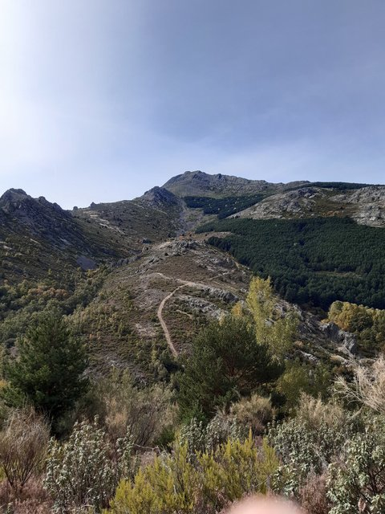
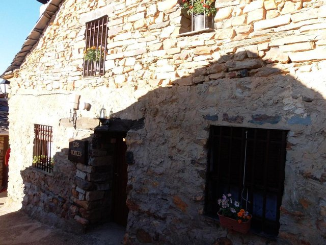
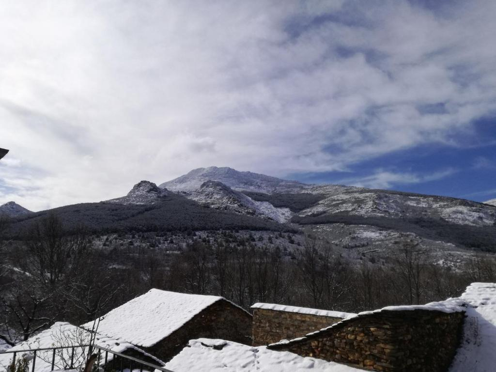

Entorno
Descubre todas las actividades y sitios que puedes visitar en la zona a través de nuestra galería.
Entorno de Valverde de los Arroyos
La casa rural se encuentra en Zarzuela de Galve, pedanía de Valverde de los Arroyos, en un entorno rural y montañoso. Descubre todas las actividades que podrás hacer en la zona y disfrutrar de la naturaleza al aire libre.
Lugares de interés cercanos
- Pico Ocejón
- Chorreras de Despeñalagua
- Hayedo de la Tejera Negra
- Cascada del Aljibe
- Monasterio de Bonaval
- Romanico Rural de Guadaljara
Actividades
 Actividades terrestres:
Actividades terrestres:
- Bicileta de Montaña
- Senderismo - Trekking
- Recogida de Setas
- Escalada
- Ascenso picos - Pico Ocejón.


Actividades acuáticas:
- Rapel en cascada - La Chorrera de Despeñalagua (más de 100m de altura)
- Baños naturales


Las Maravillas de Nuestro Entorno




